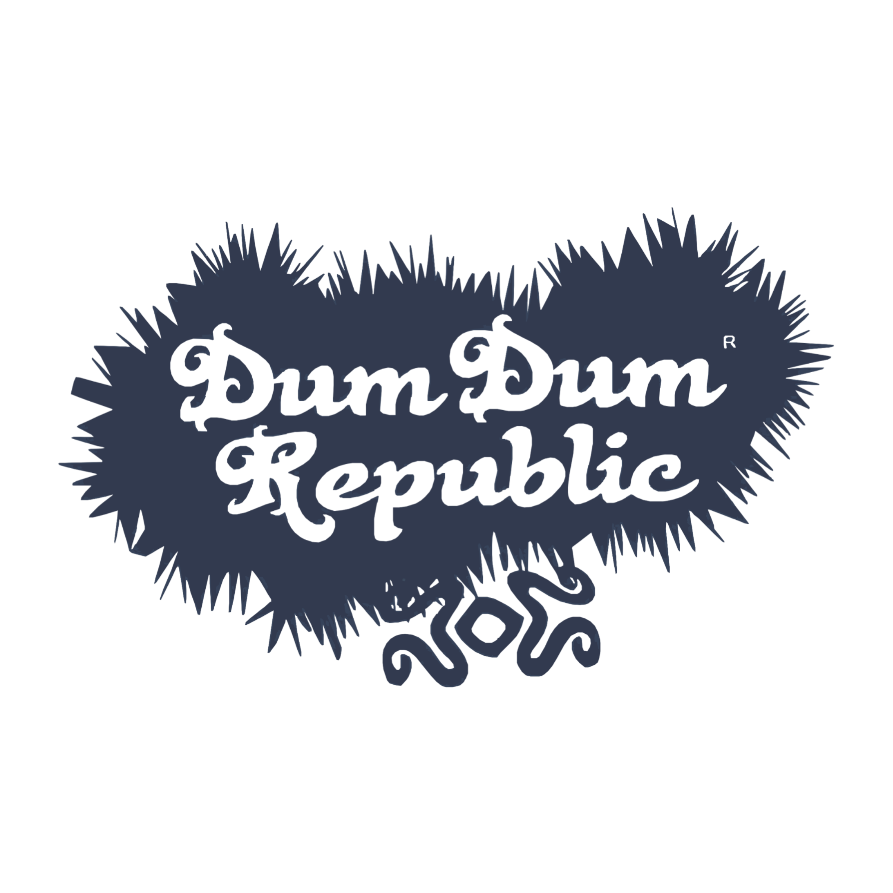
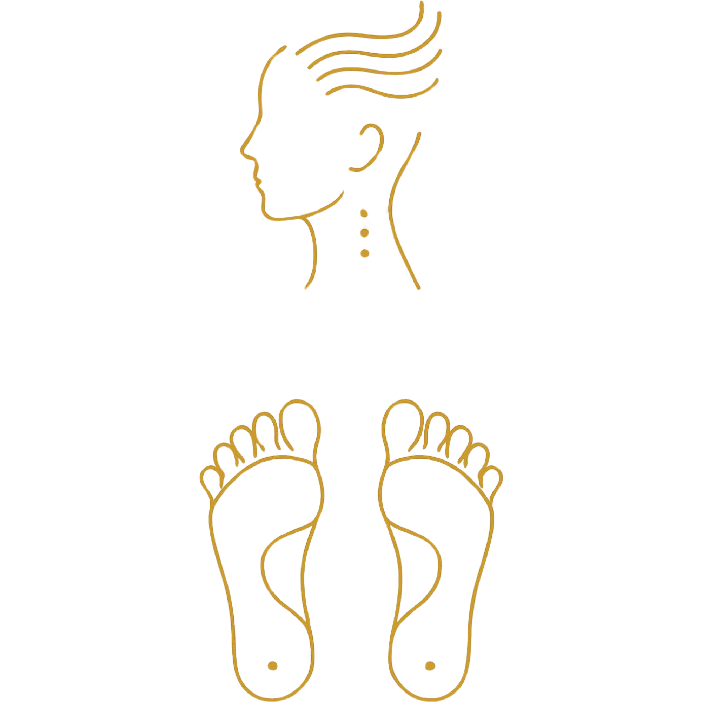
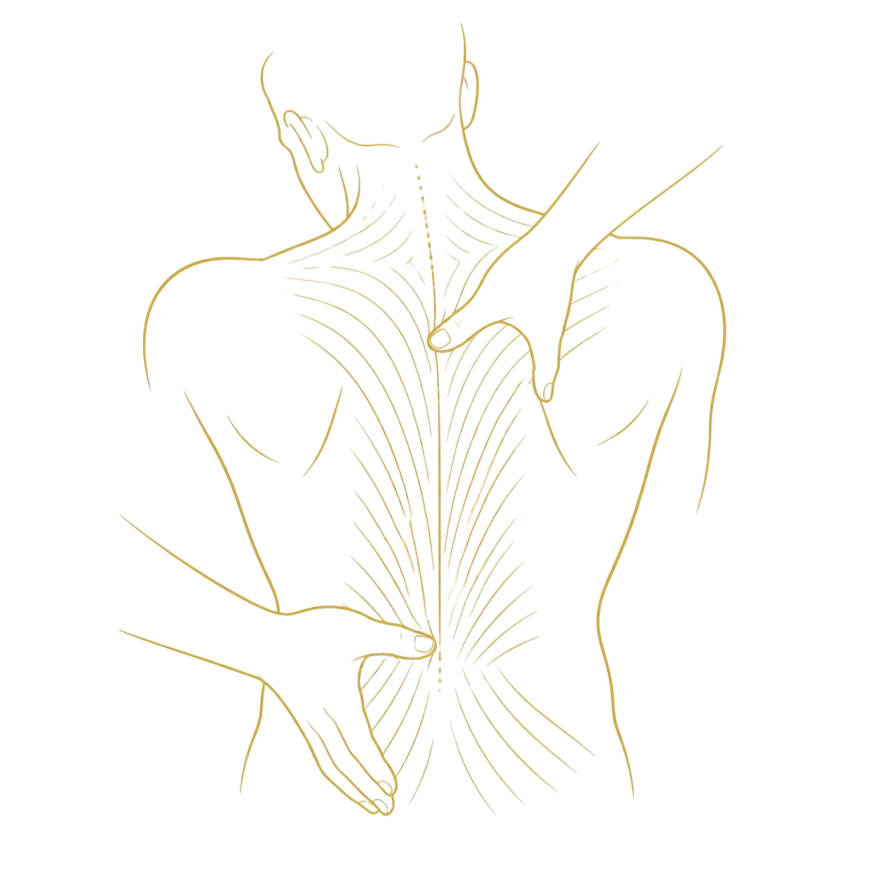
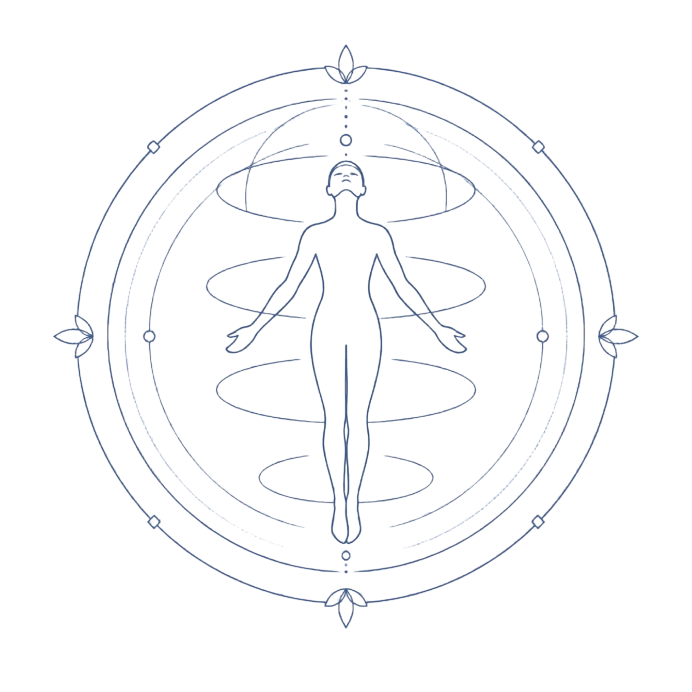

Il lusso del vero distacco mentale.

Un intervento rapido mirato per sciogliere tensioni principali: cervicale, testa o piedi. Eseguito a secco o con oli asciutti per non macchiare, perfetto come ricarica istantanea o pre-serata.

Massaggio decontratturante e defaticante profondo, ideale dopo lo sport o una settimana intensa. L'uso di oli essenziali rinfrescanti alla menta e aloe dona sollievo immediato e rigenerazione muscolare.

L'esperienza olistica d'élite a 360°. Un protocollo esclusivo che unisce manovre profonde, stretching assistito e riequilibrio energetico totale per il massimo della cura e del distacco mentale.
Servizio esclusivo su prenotazione.
Disponibile solo in date selezionate.